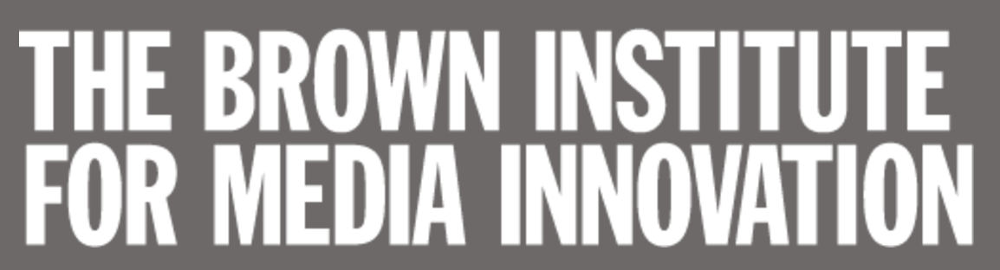

Speaker Series
New York City is the most creative city in the world. Increasingly, human creativity is enhanced by data-intensive algorithms and technologies. This "human-in-the-loop" process massively accelerates the speed and scale that content is created, delivered, and consumed by automating repetitive and costly tasks, while magnifying human expertise when it is needed.
(Data+Media): Humans in the Loop is a speaker series that focuses on how technology is helping humans both create, consume, and understand creative, artistic, and civic expression across all forms of media. We want to understand two questions:
- How can we accelerate and empower human contributions by 100-1000x?
- What are the personal or societal risks and how can they be addressed?
Each event brings together industry and academic experts to share cutting edge technology as well as research and engineering challenges in this area. The goal of these events is to foster and spark collaborations between Columbia researchers and the broader community.
Format
Events are hosted throughout the 2016 fall and 2017 spring semesters.
The first 1-1.5 hours is a series of short talks, panels, or demos, followed by a mixer with refreshments provided.
We invite the wider NYC academic and industry community to attend and participate!
About the Center
This series is hosted by the Center for New Media. The center includes researchers from the fields of Architecture, the Humanities, the Social Sciences, Education, Journalism, Engineering, and Computer Science.
We are part of the Data Science Institute at Columbia University. This event series is co-hosted with the TOW Center for Digital Journalism and the Brown Institute for Media Innovation.
